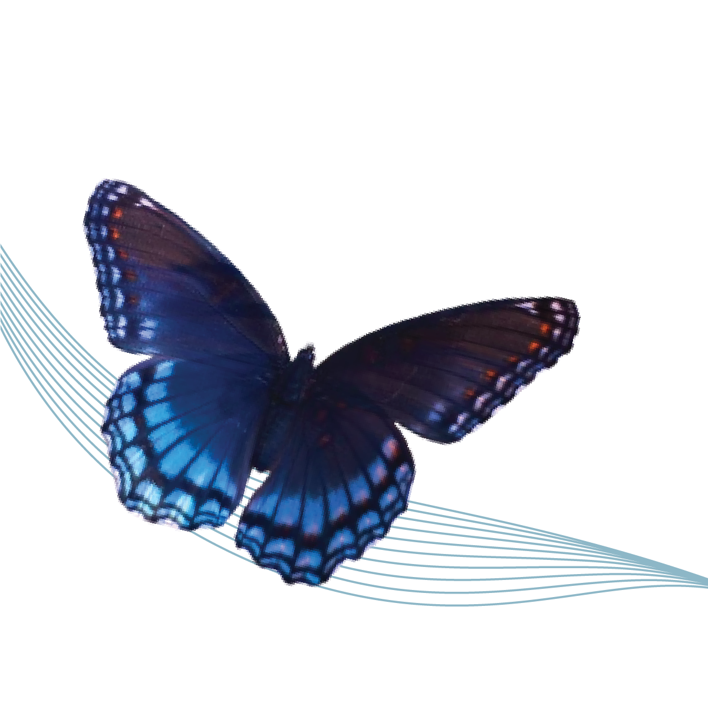

Butterflies make the world a little more colorful. Their vivid wing coloration and fluttering flight path lend a special touch of beauty to nature. However, butterflies do more than just paint a pretty picture. They help flowers pollinate, eat plenty of weedy plants and provide a food source for other animals. In addition, their presence or absence can tell us a lot about the local environment.
Adult butterflies drink nectar from blossoms on flowering plants. Butterflies use a long proboscis to reach deep into the bloom to get at the nectar. The proboscis, which is a part of their mouths, works like a long straw that butterflies curl into a spiral when not using. Like bees and other pollinators, butterflies pick up pollen while they sip a flower’s nectar.
Butterfly’s wings are covered by thousands of tiny scales, and these scales reflect light in different colors. But underneath all of those scales, a butterfly wing is actually formed by layers of chitin—the same protein that makes up an insect’s exoskeleton. These layers are so thin you can see right through them.
Butterflies undergo a metamorphosis in their life cycle. They are at the base of the food web, with some becoming a source of food, especially as caterpillars, for birds and other animals. Others will survive to lay eggs, repeating the growth cycle from egg, to caterpillar, to pupa, and finally to butterfly.